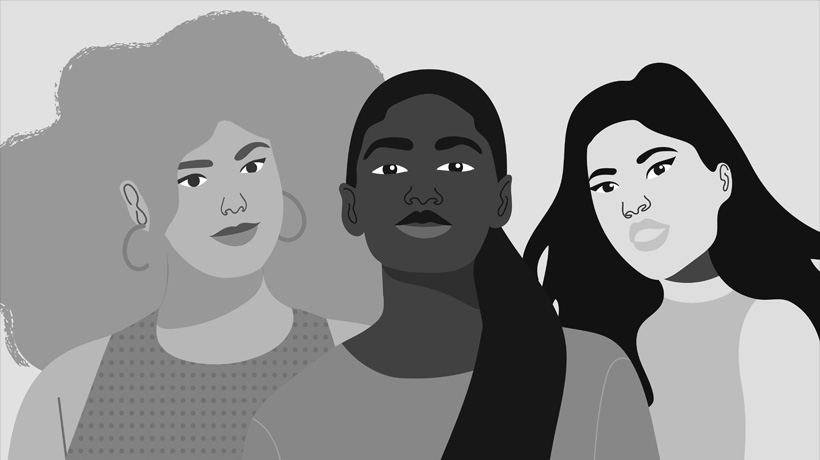
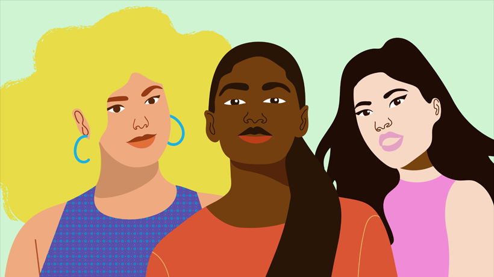

Today at Apple — She Creates
In celebration of International Women's Day, from March 1 through 31
discover how female creativity can empower communities. Join hands-on
sessions using iPad, iPhone, and Mac to connect, share ideas, and explore
new perspectives that can spark change.